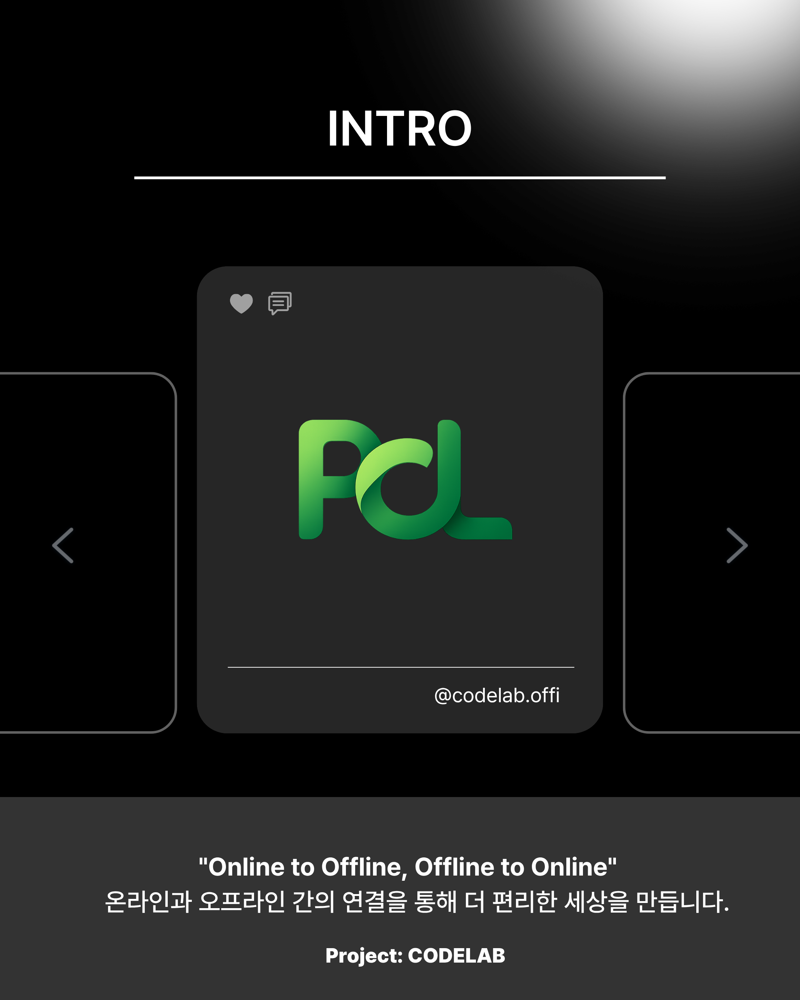
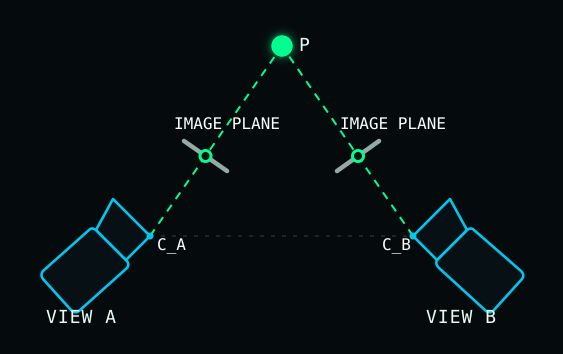
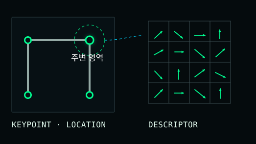
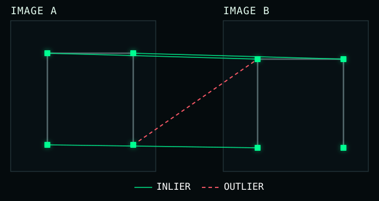
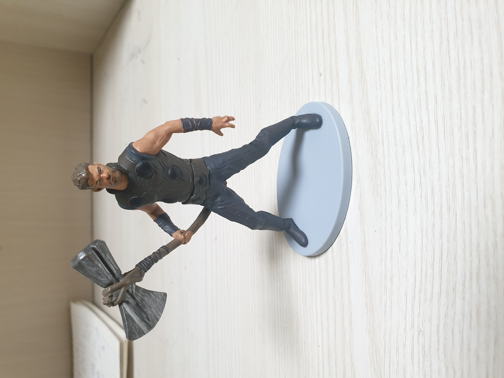
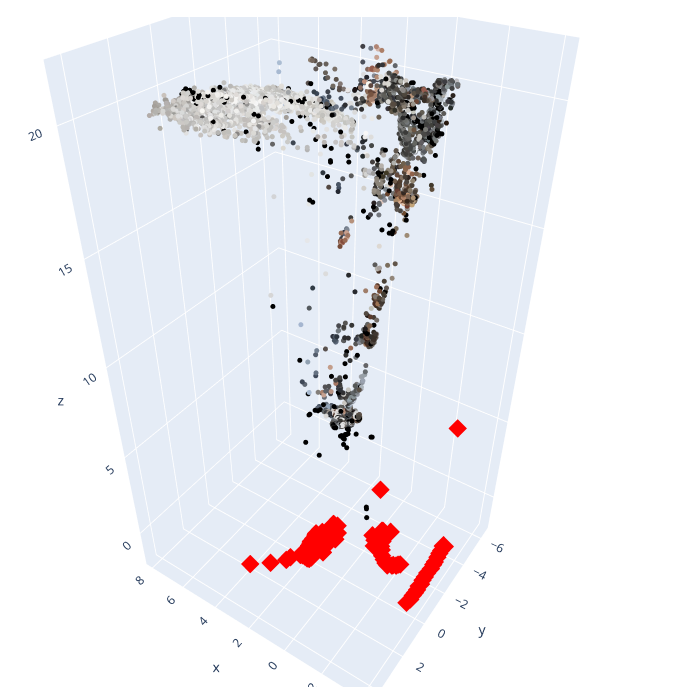
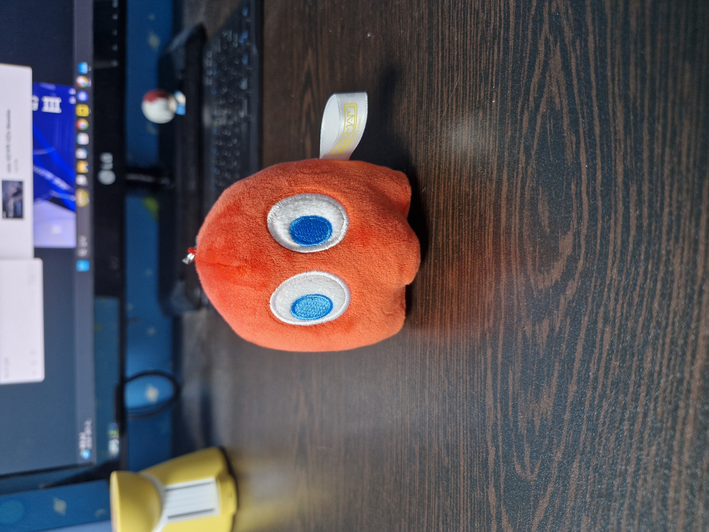
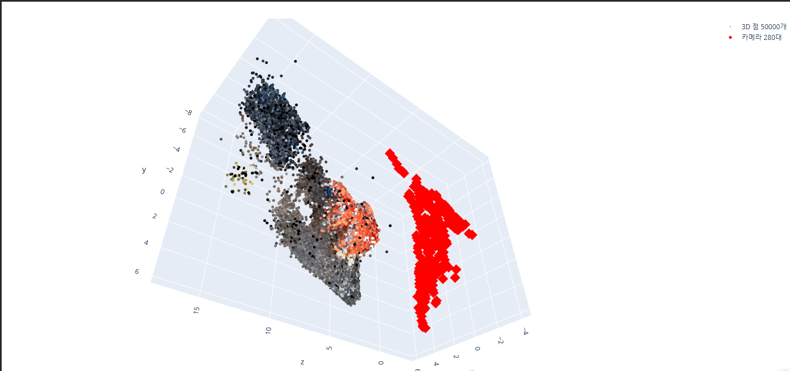

[ CODELAB · 3D RECONSTRUCTION ]
COLMAPHUNYUAN3D
2D 사진의 3D 복원
20824 지승현 · 20816 김준엽 · 20320 김명훈 · 11035 황성윤
[ CODELAB · 3D RECONSTRUCTION ]
2D 사진의 3D 복원
20824 지승현 · 20816 김준엽 · 20320 김명훈 · 11035 황성윤
프로그래밍을 배우고
직접 제작하는 동아리

2D 사진만으로
3D 형태를 어떻게 복원할까?
SfM의 핵심
같은 점이 사진마다 다른 위치에 나타나는 현상을 이용해 카메라 위치와 3D 구조를 계산합니다.
SfM Structure from Motion


모서리, 글자, 무늬처럼 구별하기 쉬운 부분
다른 사진에서 같은 특징점을 찾는 기준

Descriptor가 비슷한 점을 연결
첫 후보와 둘째 후보가 비슷한 매칭 제거
Epipolar 규칙과 맞지 않는 Outlier 제거
두 시선으로 3D 좌표 계산
사진을 하나씩 추가하며 구조 확장
재투영 오차를 줄여 전체 위치 보정
COLMAP 결과
희소
점군
여러 사진에서 안정적으로 연결된 특징점만 3D 좌표로 남습니다.
개념 시각화

복원 실패


사진 수와 촬영 방향이 부족해 안정적인 다중 시점 정보를 확보하지 못했습니다.
사진에 보이지 않는 옆면과 뒷면도 학습한 형태 정보를 바탕으로 생성합니다.
다만, 보이지 않는 면은 실제 관측값이 아니라 AI가 추정한 결과입니다.
COLMAP
Hunyuan3D
알고리즘의 연결
특징점 추출부터 Bundle Adjustment까지 모든 단계가 최종 결과에 영향
입력 데이터의 품질
사진 중첩, 촬영 간격, 표면과 조명 조건의 중요성 확인
두 방식의 차이
실제 관측 기반 복원과 AI 기반 생성의 장단점 비교
더 많은 사진으로 Dense Reconstruction과 3DGS 적용
감사합니다